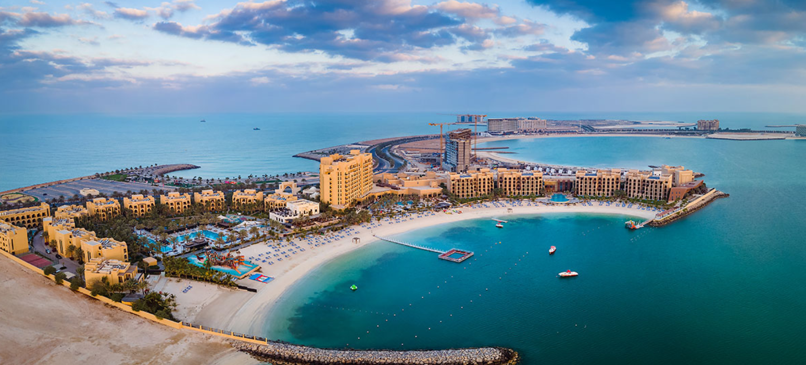
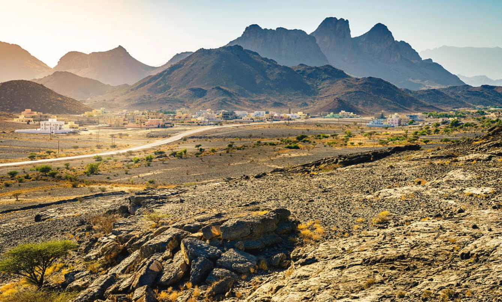

Ras Al Khaimah is a treasure trove of Emirati heritage, offering a rich collection of culture, traditions, and values rooted in centuries of history.
Bedouin Lifestyle

Coastal Lifestyle
Mountain Lifestyle
Hospitality lies at the heart of RAK’s values—visitors are often greeted with warmth and offered traditional Arabic coffee and dates as a sign of respect and welcome.